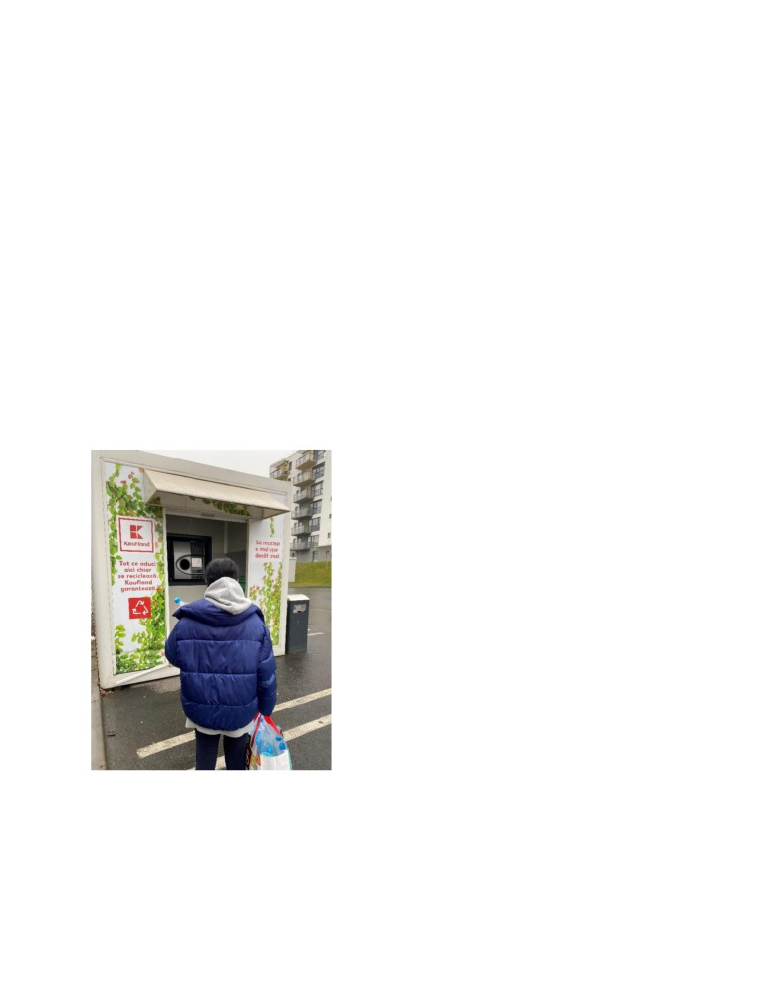
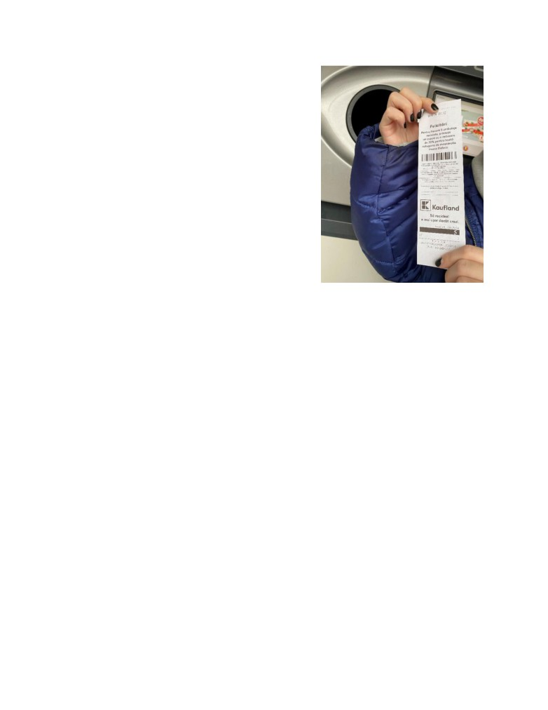

Importanța reciclării în Cluj-Napoca.
De Nicole Rivera | 04.01.2021
Este ora 10 dimineața și îmi beau al treilea pahar de apă de când m-am trezit, gândindu-mă că
trebuie să beau 2 litri de apă înainte de ora 15:00 astăzi. M-am uitat la cele 3 sticle goale de apă pe
care le-am păstrat în ultima săptămână și m-am gândit dacă ar trebui să merg pe jos până la
Kaufland cu ele sau să merg cu autobuzul. Era o zi rece, dar nu mă deranja, eram hotărâtă să ajung
acolo cu sticlele mele.
Reciclare, recuperare, refolosire, sunt 3 de cuvinte care
pot ajuta lumea. Reciclarea este unul dintre lucrurile pe
care mulți oameni din Cluj au reușit să le facă. Din 2018,
datorită „Kaufland România”, oricine dorește să recicleze
poate merge în locurile alocate unde există un aparat de
reciclare și care este tip self-service și răsplătesc clienții
care reciclează ambalajele cu un cupon de reducere la
produsele selectate.
În Cluj este un singur dispozitiv de reciclare în acest
moment și este situat în Kaufland pe stradă Strada Aurel
Vlaicu 182. Îmi fac cumpărăturile săptămânale în acest
loc și mi-am dat seama că mulți oameni merg acolo și
reciclează. PET-uri (cu volum de până la 3 litri), sticlă și
doze de aluminiu (cu volum de până la 1 litru) sunt lucruri
care pot fi reciclate.
Timpul a trecut și era 3 după-amiaza, era timpul să mergem acolo. Am ajuns la Kaufland și mi-am
dat seama că oferta lunii era o reducere de 20% la achiziționarea de brânză Mozarella. M-am
bucurat pentru că aș putea face paste cu mozzarella miercurea viitoare!
Motivul pentru care am mers acolo nu a fost doar pentru o reducere, ci pentru că am vrut să cunosc
perspectiva celorlalți în legătură cu reciclarea. Am decis să stau acolo vreo 2 ore, și am adresat
câteva întrebări anumitor persoane care au reciclat anumite lucruri în acel loc.
În timp ce așteptam și muream de frig, deoarece temperatura era de 0 grade, am văzut că o femeie
se apropia de dispozitivul de reciclare. Ea a fost prima persoană pe care am pus o întrebare, o
femeie de 42 de ani. „Reciclați în general? ”, și răspunsul ei a fost: „Da! Locuiesc singură și în
fiecare săptămână colectez cel puțin 5 sticle de plastic și le aduc aici. Beau multă apă, așa că îmi
este ușor să reciclez”.

După 12 minute, un bărbat de 31 de ani și fiul său de 5 ani au ajuns în acest loc. „Prin educație, de
aici pornește totul. Si prin amenajarea containerelor pe categorii la toate blocurile”. Acesta a fost
răspunsul său la întrebare „Cum putem să facem reciclarea mai ușoară și mai eficientă? ”. Apoi l-
am întrebat „Știți despre vreo organizație pentru reciclare? ”, și mi-a spus „Pe lângă Kaufland, știu
despre Romprest, crucea roșie (haine) ”.
30 de minute mai târziu, un cuplu ajunge cu sticle de plastic în mâini și le-am pus aceeași întrebare
pe care am pus-o bărbatului cu fiul său. „Cum putem să facem reciclarea mai ușoară și mai
eficientă? ”. Și răspunsurile lor au fost diferite, bărbatul a spus: „Plasarea tomberoanelor in nr mai
mare si transparența in procesul firmelor private”, apoi femeia a răspuns cu: „Cred ca oamenii
trebuie sa fi încurajați sa recicleze, adică, sa existe mai multe automate sau organizație unde putem
sa le ducem sticlele reciclate si sa primim banii pentru ele.”
Timpul a trecut și nu a mai venit nimeni, dar apoi am văzut o tânără care ținea o pungă plină cu
sticle de plastic. Era elevă de liceu, 17 ani, și am fost surprinsă de faptul că era singura cu mai
mult de 5 sticle de plastic și am decis să-i pun câteva întrebări. Am început cu o întrebare simplă,
„Cum ai reușit să colectezi atâtea sticle de plastic? ”.
Ea a râs și mi-a spus: „În fiecare zi după-amiază îi întreb pe toți prietenii mei care locuiesc lângă
mine dacă au sticle goale de plastic, așa că în fiecare
săptămână vin aici cu ce pot colecta. ” I-am găsit
răspunsul foarte interesant pentru că era cea mai tânără
persoană care venise în acest loc. Apoi am întrebat-o,
„Crezi că trebuie să reciclăm? ”, mi-a spus „Bineînțeles
că, da!”.
„In primul rând, prin informare si educație. Începând
prin educarea noilor generații. Făcând fiecare partea
noastră, cu colectarea deserturilor in fiecare zi”. Acesta
a fost răspunsul ei la întrebarea pe care i-am pus-o
celorlalți oameni. „Cum putem să facem reciclarea mai
ușoară și mai eficientă? ”.

După ce i-am pus câteva întrebări acestei fete, mi-am dat
seama cât de fericită părea că a obținut un cupon de
reducere.
După ce a plecat, am mai așteptat 30 de minute, dar nu a
mai venit nimeni. Cu toate acestea, răspunsul fiecăruia
dintre acești oameni a fost foarte informativ și a
reprezentat perspectiva reciclării.
În concluzie, chiar dacă acest grup de oameni se
străduiește să facă o schimbare în lume și să recicleze ori
de câte ori pot, nu înseamnă că este suficient. Celelalte
supermarketuri situate în orașul Cluj ar trebui să urmeze
acest exemplu și să implementeze un plan de reciclare mai
ușor și care să îi motiveze pe oameni să recicleze. Mai
mult decât atât, oamenii din acest oraș ar aprecia să fie mai
educați în ceea ce privește reciclarea, dar nu există
suficientă relevanță pentru a aprinde o scânteie de motivație.